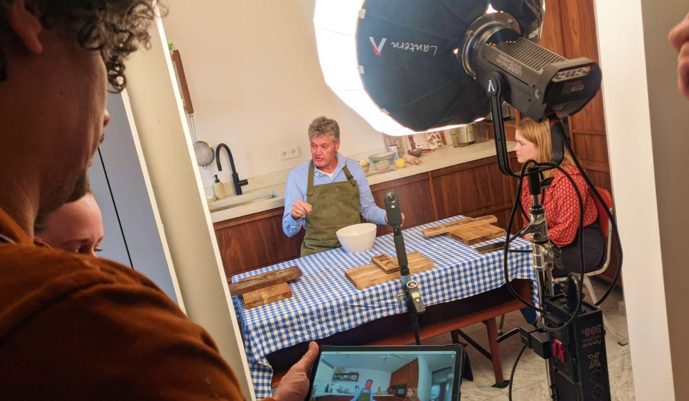

Elders VR
-
Type
Screenwriter - Extra
-
Role
Screenwriter
Extra
-
Period
January 2023
-
Client
Elders VR
During my minor in immersive environments, I was able to work with my team with Elders VR on the production for a new 360-degree video for seniors with dementia. Elders VR is a company that focuses on VR that has a positive effect on loneliness, mental acceptance and cognitive enhancement. The idea is that by simulating a feared situation, VR users become mentally accustomed to the situation. Thus, they become more confident and more daring to cross difficult thresholds in the "real world.
Task
Our task was to come up with a concept that fits the target audience of elderly people. And the goal to stimulate brains and bring up memories in elderly people with dementia. We also needed to write a script (for a 360 degree video) with a fluid logical and entertaining story. Something that has atmosphere without being too informative. And of course it has to fit what the clients like. Furthermore, everything needs to be arranged for shooting and the video will also need to be edited.
Ideation
We first started by coming up with different ideas. Everyone put this in the Miro board, from this we chose our favourites based on dot-voting. Discussing with our client EldersVR we decided what ideas would suit our audience best and what they would like to take in production. We had to take different things in account as we were for example filming in winter lighting could be bad and to give the elderly people a good experience video material should be shot smooth and not shaky. Things like ice skating was something that was of the cards because it would be to shaky and dangerous for the expensive equipment we were working with.
Scripting
We went through many scripts during this process to arrive at our final concept. Such as animal grooming, the south sea museum and ice skating these were all dropped for various reasons. In the end we went for old Dutch speculaas baking. This gives the elderly a sense of nostalgia and coziness when they can join us. We also ask the elderly different questions that activate their brains and bring up memories. We gave the actor Porgy Franssen the role of the baker and we participated as a team as extras. We were also involved in directing and the technology behind the filming.
Filming Day
On Jan. 9, 2023, we could then begin filming we started at 9 a.m. to get the set and all the props we needed ready. Then we went through the script together and filmed until 5:30 in the afternoon. After filming all the scenes we also had to record different stills to mask different things out in the final edit.

Final Result
Below you can see the final result of the 360 degree video. EldersVR was very happy and excited with the result and has the video in use. It is being presented to elderly people with dementia in nursing homes to give them another experience they might not otherwise have.
Next Project >
Honey and Hive
Design of brand identity for Honey and Hive!